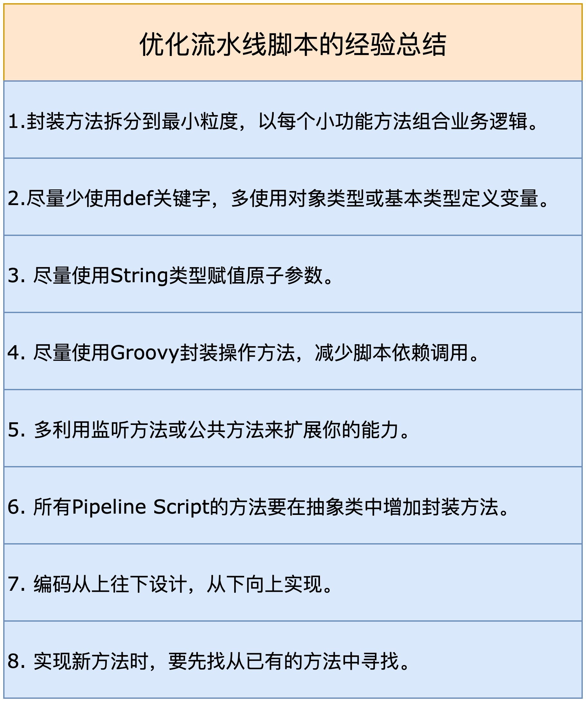
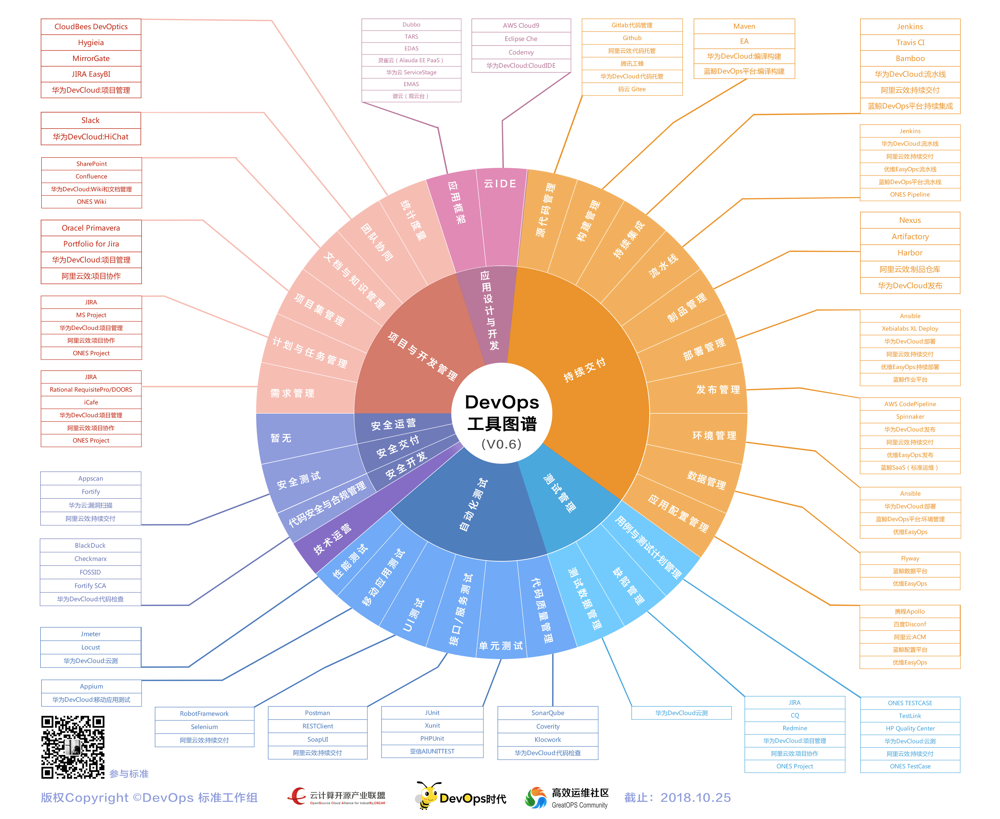
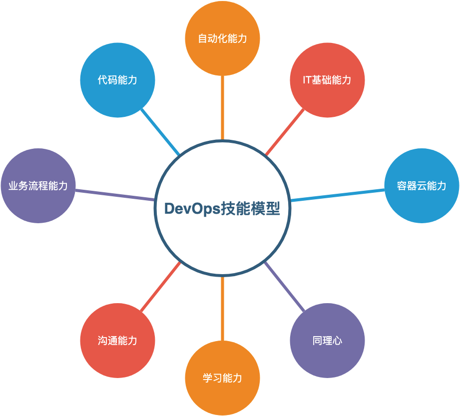
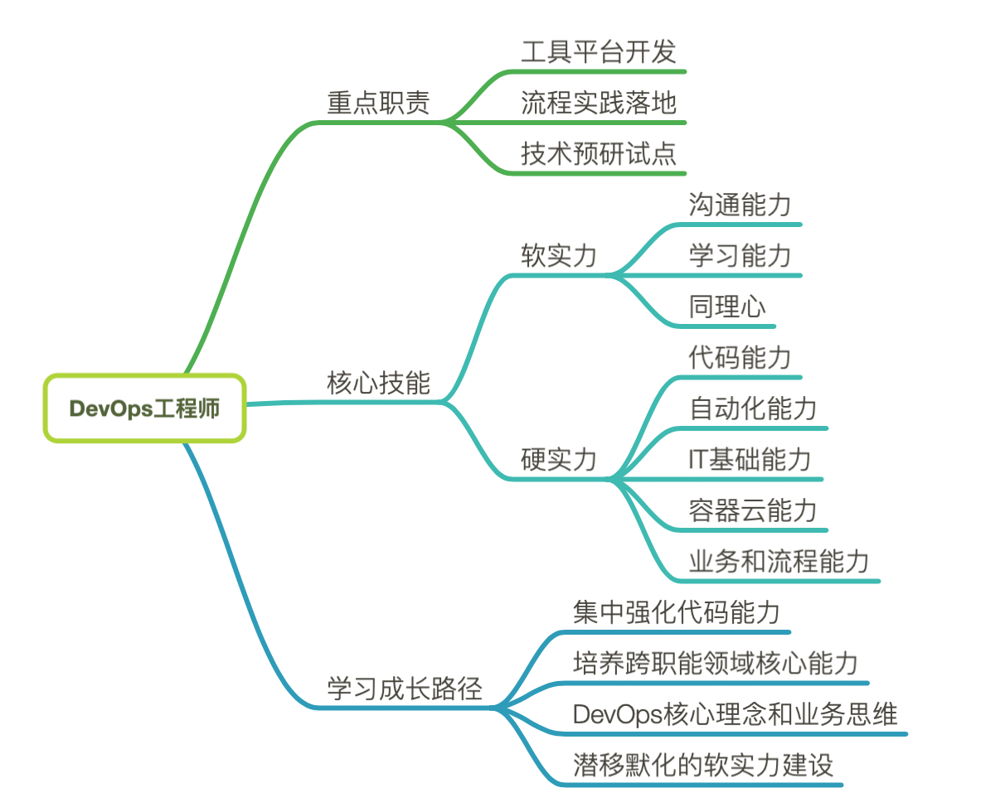

- 00 开篇词 从默默无闻到风靡全球，DevOps究竟有什么魔力？.md.html
- 01 DevOps的“定义”：DevOps究竟要解决什么问题？.md.html
- 02 DevOps的价值：数字化转型时代，DevOps是必选项？.md.html
- 03 DevOps的实施：到底是工具先行还是文化先行？.md.html
- 04 DevOps的衡量：你是否找到了DevOps的实施路线图？.md.html
- 05 价值流分析：关于DevOps转型，我们应该从何处入手？.md.html
- 06 转型之路：企业实施DevOps的常见路径和问题.md.html
- 07 业务敏捷：帮助DevOps快速落地的源动力.md.html
- 08 精益看板（上）：精益驱动的敏捷开发方法.md.html
- 09 精益看板（下）：精益驱动的敏捷开发方法.md.html
- 10 配置管理：最容易被忽视的DevOps工程实践基础.md.html
- 11 分支策略：让研发高效协作的关键要素.md.html
- 12 持续集成：你说的CI和我说的CI是一回事吗？.md.html
- 13 自动化测试：DevOps的阿克琉斯之踵.md.html
- 14 内建质量：丰田和亚马逊给我们的启示.md.html
- 15 技术债务：那些不可忽视的潜在问题.md.html
- 16 环境管理：一切皆代码是一种什么样的体验？.md.html
- 17 部署管理：低风险的部署发布策略.md.html
- 18 混沌工程：软件领域的反脆弱.md.html
- 19 正向度量：如何建立完整的DevOps度量体系？.md.html
- 20 持续改进：PDCA体系和持续改进的意义.md.html
- 21 开源还是自研：企业DevOps平台建设的三个阶段.md.html
- 22 产品设计之道：DevOps产品设计的五个层次.md.html
- 23 持续交付平台：现代流水线必备的十大特征（上）.md.html
- 24 持续交付平台：现代流水线必备的十大特征（下）.md.html
- 25 让数据说话：如何建设企业级数据度量平台？.md.html
- 26 平台产品研发：三个月完成千人规模的产品要怎么做？.md.html
- 27 巨人的肩膀：那些你不能忽视的开源工具.md.html
- 28 迈向云端：云原生应用时代的平台思考.md.html
- 29 向前一步：万人规模企业的DevOps实战转型案例（上）.md.html
- 30 向前一步：万人规模企业的DevOps实战转型案例（下）.md.html
- 期中总结 3个典型问题答疑及如何高效学习 (1).md.html
- 期中总结 3个典型问题答疑及如何高效学习.md.html
- 期末总结 在云时代，如何选择一款合适的流水线工具？.md.html
- 特别放送（一）成为DevOps工程师的必备技能（上）.md.html
- 特别放送（三）学习DevOps不得不了解的经典资料.md.html
- 特别放送（二）成为DevOps工程师的必备技能（下）.md.html
- 特别放送（五）关于DevOps组织和文化的那些趣事儿.md.html
- 特别放送（四）Jenkins产品经理是如何设计产品的？.md.html
- 结束语 持续改进，成就非凡！.md.html
- 捐赠
特别放送（二）成为DevOps工程师的必备技能（下）
你好，我是石雪峰。在上一讲，我介绍了DevOps工程师的具体职责以及DevOps工程师必备的3项软实力，分别是沟通能力、同理心和学习能力。有了这些认知之后，我们今天来看看“重头戏”：DevOps工程师必备的硬实力以及学习路径。
DevOps工程师必备的硬实力
所谓硬实力，说白了就是指一个人的技术能力。软实力通常是“只可意会不可言传”的，但技术本身就具体多了，重要的是，技术水平的高低相对来说也更好衡量。在公司里面，技术人员要想获得晋升，重点就是依靠技术能力。
IT行业覆盖的技术领域非常广，而且近些年的新技术也是层出不穷的，从入门到精通任何一门技术，都需要大量时间和精力的投入。那么，在面对这么多技术的时候，究竟要选择从哪个开始入手，真是一个难题。对于希望成为DevOps工程师，甚至是DevOps专家的你来说，究竟有哪些必须掌握的核心技术呢？
1.代码能力
现在这个时代，代码能力可以说是最重要的硬实力了。IT行业自然不用说，像运维有运维开发，测试也有测试开发，就连产品经理都要懂代码，不然可能都没办法跟开发同学顺畅交流。
对于工具平台自身的建设而言，代码能力自然是重中之重。这不仅仅在于通过写代码来实现工具平台本身，还在于你能了解开发的完整过程。这些平台的用户每天跟代码打交道的时间可能比跟人打交道的时间还多，如果你不能理解他们的日常工作方式，那么你做出来的工具平台，又怎么能真正解决团队的问题呢？
这里提到的代码能力包含两个方面，分别是脚本语言能力和高级语言编程能力。
- 脚本语言能力。这对于运维工程师来说自然是驾轻就熟，各种VIM、Emacs手到擒来，Shell和Python也是轻车熟路。而对于开发人员来说，难点不在于语法本身，而在于对关联操作系统和命令的理解上。毕竟，脚本语言是一种快速的自动化手段，追求的是高效开发，简单易用。
- 高级语言编程能力。你需要至少掌握一门高级语言，无论是Java、Python还是Ruby和PHP。其实语言只是工具，你不用过度纠结于选择哪门语言，要求只有一个，就是你能用它来解决实际问题，比如能够支持你实现面向移动端或者Web端的工具平台开发。为了写出好代码，而不仅仅是写出能用的代码，你也需要对于一些常见的开发框架和开发模式有所了解。这是一个相对漫长的过程，绝对不是什么“21天精通XX语言”就够了。因为看得懂和写得好，完全是两码事。
好的代码是需要不断打磨和推敲的。与其说写好代码是一门技术，不如说是一种信仰。我们团队的内部沟通群名叫作“WBC团队”，“WBC”也就是“Write Better Code”的缩写，这其实也是我们团队对自己的一种激励。在日常的开发过程中，我们会不断发现和总结更好的实现方式，在内部分享，互相学习，从而持续提升代码能力。我截取了一部分我们最近优化流水线脚本的经验总结，你可以参考一下。其实，每个人都能总结出自己的代码心经。

2.自动化能力
在自动化方面，你首先需要对CI/CD，也就是持续集成和持续交付，建立起比较全面的认知。因为CI/CD可以说是DevOps工程领域的核心实践，目前大部分公司都在集中建设软件的持续交付能力，尤其是以流水线为代表的持续交付平台，很多时候就同DevOps平台划上了等号。
接下来，为了实现全流程的自动化，你需要能够熟练使用CI/CD各个关键节点上的典型工具，并且了解它们的设计思路。
一方面，目前很多公司都在拥抱开源，参与开源，开源工具自身的成熟度也非常高，并且逐渐取代商业工具，成为了主流方案。通过直接使用开源工具，或者基于开源工具进行二次开发，也是自动化领域投入产出比最高的方式。所以，像版本控制工具Git、代码托管平台Gitlab、CI工具Jenkins、代码扫描工具Sonar、自动化配置管理Ansible、容器领域的Docker、K8S等等，这些高频使用的工具都是你优先学习的目标。
另一方面，无论是开源工具，还是自研工具，工具与工具之间的链路打通也是自动化的重要因素。所以，在理解开源工具的实现方式的基础上，就要能做到进可攻，退可守。无论是封装，还是自研，有了工具的加持，CI/CD也会更加游刃有余。
关于DevOps的工具图谱，我跟你分享一个信通院的DevOps能力成熟度模型版本，供你参考。值得注意的是，工具不在多，而在精。其实，工具的设计思路和理念有共通之处，只要精通单个节点上的工具，就可以做到以点带面。

3.IT基础能力
我始终认为，运维是个特别值得尊敬的工种，也是DevOps诞生的原点。如果你不是运维出身，那你要重点掌握运维的基础概念，最起码要了解Linux操作系统方面的基础知识，包括一些常用的系统命令使用，以及网络基础和路由协议等。毕竟，对于开发者来说，他们通常习惯基于IDE（集成开发环境）图形界面工作。比如，如果问一个iOS开发同学怎么通过命令行的方式进行构建调试，或者如何用代码的方式实现工程的自动化配置，他可能就答不上来了。
另外，随着基础设施即代码的技术不断成熟，你还要能看懂环境的配置信息，应用自动化构建、运行和部署的方式等，甚至可以自行修改环境和应用配置，这样才能实现所谓的开发自运维。虽然在大多数公司，运维的专业能力一般都会通过运维平台对外提供服务，但对于基础概念，还是需要既知其然，也知其所以然。
4.容器云能力
云计算对于软件开发和部署所带来的变化是革命性的。未来企业上云，或者基于云平台的软件开发会慢慢成为主流。而容器技术又天生适合DevOps，Kubernetes可以说是云时代的Linux，基于它所建立的一整套生态环境，为应用云化带来了极大的便利。
所以，无论是容器技术的代表Docker，还是实际上的容器编排标准Kubernetes，你也同样需要熟悉和掌握。尤其是在云时代，基于容器技术的应用开发和部署方式，都是DevOps工程师必须了解的。
5.业务和流程能力
在任何时候，DevOps的目标都是服务于业务目标，DevOps本身也从来不是墨守成规的方式，而是代表了一种变革的力量。所以，加强对业务的理解，有助于识别出DevOps改进的重点方向，而流程化的思维建设，有助于突破单点，放眼全局。
很多时候，企业需要的不仅仅是一个工具，而是工具所关联的一整套解决方案，其中最重要的就是业务流程。
对于DevOps工程师来说，要有能力发现当前流程中的瓶颈点，并且知道一个更加优化的流程应该是怎样的，这一点也是制约工程师进一步拓展能力的瓶颈之一。
举个例子，对于开发DevOps平台工具来说，你可能认为最合适承担的团队就是开发团队，因为他们的代码能力最强。但是实际上，DevOps平台的设计，很多时候都是由最熟悉企业内部研发流程的团队来主导的。正因为DevOps工程师的工作应该同业务紧密联系，更加关注于全局交付视角，所以很多时候，配置管理、质量管理、项目管理和技术运维团队更多地在承担相近的角色。毕竟，只有方向正确，所做的一切才是加法。

学习路径
那么，要想成为DevOps工程师，是否有一条普适性的学习路径呢？实际上，这个问题就跟我们要在公司推行DevOps，是否存在一条通用的改进路径一样，并不是一个容易回答的问题。
从前面的能力模型可以看出，DevOps工程师特别符合现在这个时代的要求，他具备多重复合能力，是典型的全栈工程师，或者“梳子型”人才。因为只有这样，才能充分弥合不同角色之间的认知鸿沟，堪称团队内部的万金油。
基于过往在公司内部推行DevOps的经验，以及当前行业的发展趋势，我有几条建议送给你：
1.集中强化代码能力
未来的世界是软件驱动的世界。我们以前总说的必备能力，比如外语、开车等，未来都可以被软件所取代。而编程能力即将成为下一个必备能力，甚至连国务院发布的《新一代人工智能发展规划》中都提到，要在中小学普及推广编程教育。
而写可以用的代码，和写好的代码之间，距离绝不只是一点点而已。你可能会说，以后都用人工智能来编程了，可问题是人工智能从何而来？又是谁来训练和标注人工智能的呢？所以，越是基础的能力，越不会过时，比如数学、核心的编程思想、数据结构，以及基于代码构建对世界的认知和建模能力。
所以，如果你现在只是刚开始接触代码，我建议你给自己定一个目标，专门强化自己的代码能力，至少花1年时间，从新手变成熟手，这对于你未来在IT行业的发展，至关重要。
跟你分享一个小技巧。你可以基于成熟的开源软件来边学习边应用，比如像Adminset这种轻量级的自动化运维平台，已经可以解决大多数中小公司的问题了。其实，代码能力不仅仅是掌握语法和框架，更重要的是基于场景，整体设计数据和业务流程，并通过代码实现出来。毕竟，只有结合实际的应用场景进行学习，才是最有效率的。
2.培养跨职能领域核心能力
相信经过几年的工作，你已经具备了当前岗位所需要的基本能力，这是你当前赖以为生的根本。那么在这些能力的基础上，逐步发展跨领域跨界的能力，尤其是那些核心能力，就成了投入产出比最高的事情。
举个例子，如果你是软件开发工程师，那么恭喜你，你已经走在了代码的道路上，接下来，运维能力就是你要尝试攻克的下一个目标。而在这些目标中，比如操作系统、自动化部署以及云能力，就是你要最优先发展的跨界能力，因为它们是运维的核心，也是了解运维最好的出发点。反过来说，如果你从事的是运维行业，那么除了常用的脚本以外，核心代码能力就是你的目标。
其实，我们每天的工作其实都离不开跨界，比如，运维每天部署的应用，为什么要部署这么多实例？每个实例之间的调用关系又是怎样的？多问几个为什么，往往就有新的收获。
不仅如此，在接触跨领域的时候，除了基础核心技能，那些最常见的工具，你也要花时间来了解。现在网上的资料足够多，快速入门应该并不困难。
3.DevOps核心理念和业务思维
如果你不理解DevOps到底是什么，那何谈成为DevOps工程师呢？因此，像DevOps中的核心理念，比如精益敏捷、持续交付，以及很多实践，你都要有所了解。当然，如果你订阅了这个专栏，我将带你走过前面的这段路，你可以快速地进入下一阶段，在实战中练习。
DevOps在公司的落地是大势所趋，也许你所在的团队也会参与其中，那么除了做好自己的本职工作外，你也可以多参与，多思考，看看推进的过程是怎样的，涉及到的角色又在做些什么，项目的整体进展和计划是什么。在实战中练习和补齐短板，对于积累经验来说，是不可或缺的。很多时候，不是没有学习的机会，只是我们自己不想看到罢了。
另外，可能你现在距离业务还比较远，那么你可以尝试了解一些大的业务目标，多跟你所在团队的上下游进行沟通，看看他们现在的关注点在什么地方。既然业务的目标需要整个团队紧密协作才能完成，那么每个团队都是其中的一份子，所以他们身上也同样体现了业务的目标。
4.潜移默化的软实力建设
类似沟通能力、同理心、自驱力、学习能力、主动性等，无论从事任何职业，都是你身上的闪光点。很多天生或者从小养成的习惯，需要长时间潜移默化的训练才能有效果。
很多时候，IT从业人员给人的印象都是不善表达，再加上东方文化的影响，本身就比较含蓄，这对很多沟通和表达来说，都是潜在的障碍。这个时候，就要尽量把握已有的机会，比如多参加团队内部的读书分享、公司内部的讲师培训报名等。即便刚开始分享的内容还不足你脑中的1%，但至少也是一个好的起点。我的建议就是6个字：勤练习，多总结。就像DevOps一样，持续改进和持续反馈，培养自己的自信心。
总结
总结一下，我在这两讲给你介绍了DevOps工程师要重点关注的3大职责，分别是工具平台开发、流程实践落地和技术预研试点。另外，我还基于实用角度提炼了8大核心能力模型，分为3条软实力和5条实力，并给出了4条提升DevOps核心能力的建议。为了方便你复习和理解，我画了一张脑图，把这两讲内容进行了汇总，你可以参考一下。

最后，我想强调的是，就像DevOps没有明确的定义一样，DevOps工程师的技能也没有明确的限定，所以，你要时刻保持好奇心，持续学习，总结出自己的能力体系，并在实践积累经验，这样才能在激烈的竞争中占得先机。
思考题
针对我们这两讲的内容，你觉得自己需要提升哪方面的能力呢？你有哪些快速提升能力的小窍门吗？
欢迎在留言区写下你的思考和答案，我们一起讨论，共同学习进步。如果你觉得这篇文章对你有所帮助，欢迎你把文章分享给你的朋友。
© 2019 - 2023 Liangliang Lee. Powered by gin and hexo-theme-book.